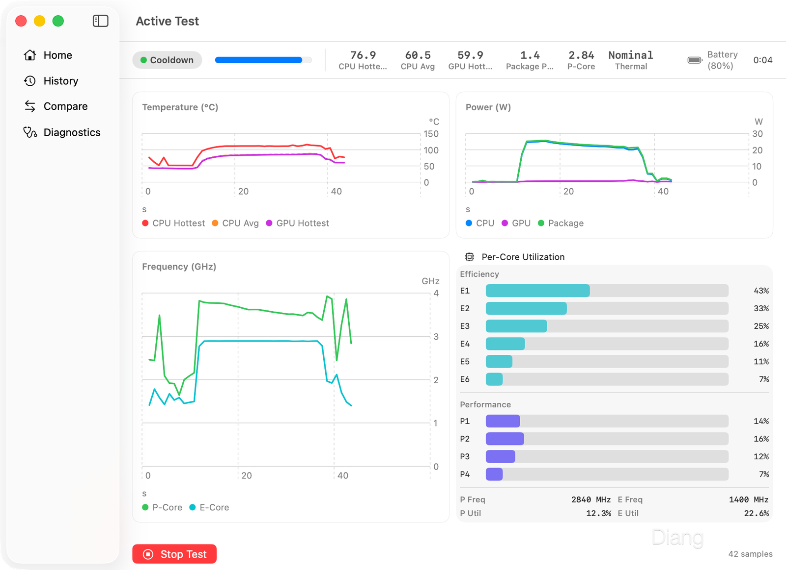
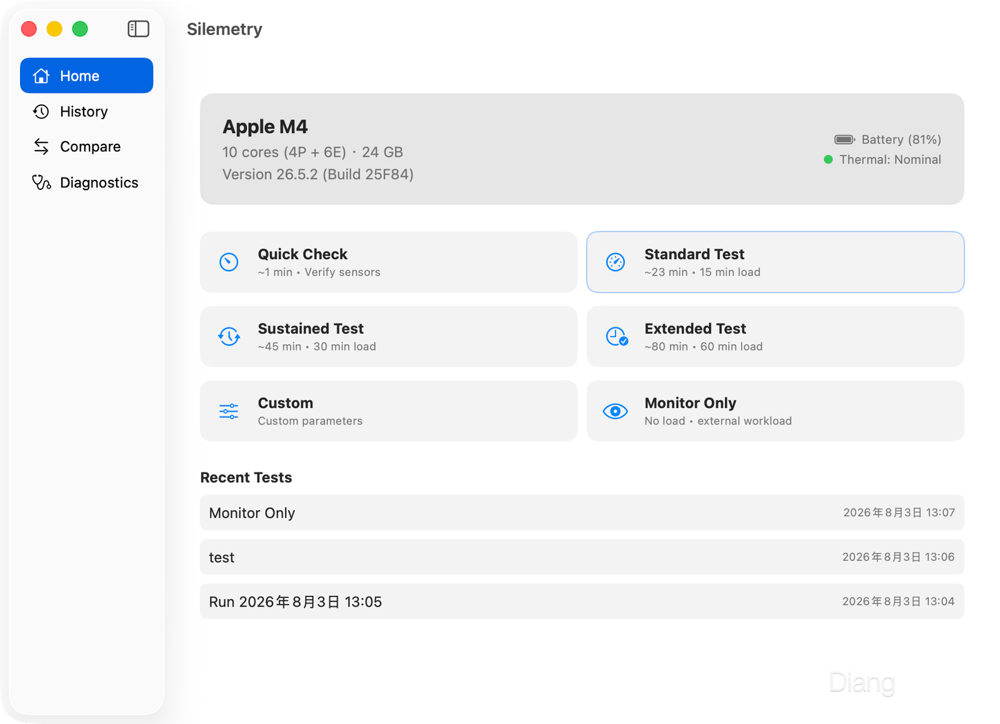

从散热测试想法到原生 macOS 应用：Silemetry 开发记录
Silemetry — See what your silicon can sustain.
Silemetry 是一个面向 Apple Silicon 的原生 macOS 遥测与持续负载测试工具。它能记录温度、功耗、频率、每核心利用率、电源状态和测试阶段，也能主动制造 CPU、GPU 或混合负载，把芯片从空闲、升温、稳态到冷却的全过程保存下来。
项目从 7 月 28 日第一个 commit 开始，到 8 月 3 日完成 v0.2.1，前后正好一周。最初我只是想更准确地观察 MacBook Air 在长时间负载下的降频过程，最后却做出了一套包含 SwiftUI、Rust、C、Metal、SwiftData、JSONL、CI 和 DMG 打包的完整应用。
这篇文章不是一份 README，也不是逐行代码说明。它更像一份开发复盘：为什么要做、架构为什么这样拆、测量数据怎样保证可信，以及那些只有真正跑起来以后才会出现的并发、文件事务和跨语言边界问题。
项目仓库： leecdiang/Silemetry-mac

1. 为什么要做 Silemetry
1.1 MacBook Air 的持续性能问题
我的主力机是一台 M4 MacBook Air。它的优点很明显：安静、轻薄、续航好；它的限制也同样明显——无风扇设计意味着芯片产生的热量只能依靠均热结构、外壳和自然对流慢慢散出去。
日常浏览网页、写文档当然没有问题，但只要进入持续编译、视频导出、本地推理、科学计算这类长负载，机身温度就会逐渐上升。系统为了把温度和整机功耗控制在安全范围内，会动态调整频率、电压和调度策略。于是用户能感受到一种很典型的现象：任务刚开始很快，几分钟后速度开始波动，停下来以后又逐渐恢复。
这种行为本身并不奇怪，困难在于我很难准确描述它：
- 第几分钟开始降频？
- 降频前后的频率和功耗分别是多少？
- CPU 与 GPU 同时工作时，谁先受热限制？
- 机身冷却后，性能恢复需要多久？
- 两次测试之间的差异究竟来自散热条件，还是来自供电、低电量模式和后台进程？
只凭体感和一个最终分数，回答不了这些问题。
1.2 跑分不能回答什么
常见跑分工具更擅长回答“这台机器最快能跑多快”。Geekbench 偏短时峰值，Cinebench 循环测试能看到一定的性能衰减，但仍然很难把温度、功耗、频率和时间完整对齐。
我真正想看的不是一个孤立的分数，而是一个过程：
1 | 空闲状态 → 开始负载 → 温度爬升 → 功耗稳定 → 频率变化 → 停止负载 → 冷却恢复 |
如果第 6 分钟频率下降，我希望同时知道那一刻温度是多少、CPU/GPU 功耗是否发生变化、系统是否切换了 Thermal State；如果更换环境或散热条件，我还希望把两轮测试放在一起比较。
这也是 Silemetry 和普通跑分工具最大的区别：它首先是一个测量工具，其次才是压力测试工具。
1.3 我真正想测量的：芯片能持续维持什么性能
峰值性能通常很好测，持续性能更难。持续性能不是单个硬件指标，而是芯片、封装、机身散热、系统调度、供电状态和软件负载共同作用的结果。
要回答“这颗芯片能持续维持什么状态”，至少需要三个能力：
- 连续采样：温度、功耗、频率和利用率需要按时间记录；
- 稳定负载：必须有可控、可重复的 CPU/GPU 工作负载；
- 完整保存：测试结束后能够回看、导出和比较，而不是只显示一个瞬时数字。
前两个能力让测试能够发生，第三个能力决定测试有没有意义。没有历史记录，就无法比较不同系统版本、不同室温、不同供电模式，也无法验证一次优化究竟有没有效果。
1.4 项目边界：原生、轻量、不关闭 SIP、不安装内核扩展
立项时我给项目设了几条很明确的边界：
- 原生应用：使用 SwiftUI 和 macOS 原生框架，不使用 Electron 套壳；
- 开箱即用：拖入 Applications 即可，不依赖 Homebrew、Python 或外部服务；
- 无需管理员权限：运行测试时不弹 sudo，不要求用户输入密码；
- 不关闭 SIP：不修改系统安全策略；
- 不安装内核扩展：所有采样和负载都在用户态完成。
这些边界直接影响了后面的实现。比如，CPU 核心目标不能依赖受限的硬绑定机制，只能通过 QoS 给调度器表达倾向；遥测也不能每秒拉起一个需要 root 的 powermetrics 进程，而要把采样能力嵌入应用内部。
需要说明的是，Silemetry 的底层遥测依赖 IOReport 相关能力。它可以在用户态工作，但并不是 Apple 面向普通第三方应用长期承诺稳定的公开高层 API。因此，“无需 root”不等于“接口永远不会变化”，跨系统版本兼容性始终是项目必须面对的风险。
1.5 从 ThermalBench 到 Silemetry
项目最早叫 ThermalBench，这个名字很直接：一个散热测试台。随着功能逐渐扩展，它已经不只是“跑一次压力测试”，而是开始承担设备识别、遥测记录、外部负载监控、历史管理和结果比较。
于是我把公开名称改成了 Silemetry：Silicon + Telemetry。
新的名字更接近项目真正做的事——观察 silicon 在真实时间尺度上的行为。工程目录和部分内部类型仍然保留 ThermalBench，因为内部命名不影响用户体验，也没有必要为了品牌重命名制造大范围无意义 diff。
2. 一款 Swift、Rust、C 和 Metal 混合应用
2.1 整体架构
Silemetry 同时使用 Swift、Rust、C 和 Metal。并不是为了堆技术栈，而是每种语言各自解决最合适的问题：
1 | SwiftUI (Views) |
这种拆分的核心不是“多语言”，而是把 UI、状态机、采样、负载和存储之间的责任边界划清。跨语言边界统一通过 C ABI 连接，避免 Swift 直接依赖 Rust 内部类型。

2.2 SwiftUI 应用层
SwiftUI 负责应用外观、页面路由和状态展示。界面主要由几类页面组成：
- Home：选择预设或进入自定义测试；
- Active Test：展示当前阶段、实时指标和曲线；
- Results：查看温度、功耗、频率、核心利用率和数据质量；
- History：管理历史测试；
- Compare：比较两次测试；
- Diagnostics：检查设备和遥测后端状态。
全局导航和上下文由 AppModel 管理，测试运行状态由 TestCoordinator 统一发布。SwiftUI View 不直接控制 CPU/GPU worker，也不直接触碰 FFI handle，只根据状态更新界面并提交用户意图。
这条边界后面非常重要：如果 View 自己持有底层资源，窗口切换、页面销毁和任务取消都会让生命周期变得不可控。
2.3 TestCoordinator：测试调度与状态机
TestCoordinator 是整个应用的核心。它运行在 @MainActor 上，负责测试配置、阶段切换、采样循环、负载启停和最终记录生成。
状态被显式建模为一个枚举：
1 |
|
状态机的价值不是让代码“看起来正规”，而是避免隐式状态组合。例如，“测试已经取消但 GPU 仍在跑”“记录已经保存但页面还认为测试进行中”，都属于没有明确状态所有权时很容易出现的问题。
2.4 Rust 遥测核心
TelemetryCore 是一个嵌入应用的 Rust crate，内部 vendor 了 macmon 0.8.0。它负责：
- 启动后台采样线程；
- 按指定间隔读取底层指标；
- 把结果转换成 C 兼容结构体；
- 给每条样本分配递增序列号；
- 通过 FFI 向 Swift 提供等待、读取、停止和销毁接口。
Rust 适合做这一层，一方面是因为 macmon 已经提供了 IOReport 通道枚举和指标聚合能力，另一方面是因为它能把采样线程、队列和错误处理封装成相对独立的模块。
应用运行时不会启动外部 Rust 进程。Rust 被编译成静态库，直接链接进 macOS App。
2.5 C：CPU 工作负载与每核心利用率
CPU 负载由 C 实现。每个 worker 使用 pthread 启动，在循环中执行 NEON FMA 运算，持续消耗执行单元，同时通过校验和防止编译器把计算优化掉。
每核心利用率也放在 C 层，通过 host_processor_info 读取每个逻辑核心的 tick 变化，再计算相邻采样之间的 busy ratio。
这部分不需要复杂抽象。C 的优势就是路径短、运行时开销低，且与 Swift、Rust 都能通过稳定的 C ABI 连接。
2.6 Metal：GPU 计算负载
GPU 负载由 Metal compute shader 生成。shader 主要执行 FMA、三角函数和寄存器内迭代，目标是让负载偏向计算而不是大规模内存搬运。
Swift 侧的 GPUWorkloadManager 负责创建 command queue、pipeline、buffer 和持续提交循环。Metal shader 在构建阶段编译为 default.metallib，随应用一起打包。
2.7 SwiftData 与 JSONL：两层数据存储
测试数据分成两层：
- JSONL 文件保存逐条原始样本；
- SwiftData 保存每次测试的摘要和索引。
目录大致是：
1 | Application Support/Silemetry/ |
为什么不把每条样本都放进 SwiftData？因为一次长测试可能产生几千甚至几万条记录，把它们全部建模成数据库实体会增加写入、查询和迁移成本。JSONL 可以流式追加，单行损坏也不至于让整个文件无法读取。
为什么摘要还要进 SwiftData？因为 History 需要排序、检索、重命名和快速显示。数据库更适合管理“每次测试一条记录”的元数据。
这套设计的本质是：文件保存事实，数据库保存索引和摘要。
3. 如何测量 Apple Silicon
3.1 为什么没有直接调用 powermetrics
powermetrics 是 macOS 自带的性能采样工具，输出内容很丰富，但直接把它作为应用后端有几个问题：
- 某些采样能力需要更高权限；
- 外部进程的启动、停止和 stdout 解析较重；
- 采样节奏和错误恢复不容易精确控制；
- 用户会看到权限和命令行层面的复杂度。
Silemetry 的目标是单 App、无 sudo，因此采用进程内遥测核心。Swift 只面对结构化样本，不需要解析文本输出，也不用维护一个外部子进程。
3.2 从 macmon 到嵌入式 TelemetryCore
macmon 解决了底层通道枚举和大量指标聚合问题。Silemetry 没有直接调用它的命令行界面，而是把相关代码 vendor 到自己的 Rust crate 中，再包一层稳定的采样接口。
选择 vendor 有两个原因：
- 可复现构建：CI 不依赖运行时网络拉取；
- 接口可控：应用只暴露自己需要的字段和错误码，不让 Swift 依赖上游内部实现。
TelemetryCore 对上层只提供一组 C 函数，内部如何采样、缓存和聚合都可以独立演进。
3.3 Swift 与 Rust 的 FFI 接口
Rust 侧通过 extern "C" 导出函数，Swift 通过 Bridging Header 调用：
1 |
|
wait_next 是关键接口。Swift 传入最后一次消费的序列号，Rust 只在出现更新样本时返回。这样既避免了高频空轮询，也能检测重复或跳过的序列。
所有跨语言结构都使用固定宽度的 C 类型，布尔值和 Optional 语义则通过 mask 表达，避免把 Rust 的复杂枚举直接暴露给 Swift。
3.4 温度、功耗、频率和利用率的数据口径
Silemetry 记录的主要指标包括：
- CPU / GPU 平均温度：多个有效传感器的聚合值；
- CPU / GPU Hottest 温度：本次采样中最高的有效传感器值；
- CPU / GPU 功耗：基于底层能量计数差分得到的瞬时功率；
- P/E Cluster 频率：当前采样周期内的簇频率；
- CPU / GPU 利用率：0 到 1 的归一化利用率；
- 每核心利用率：每个逻辑核心的 busy ratio；
- 电源状态：AC、Battery 或 Unknown；
- Low Power Mode：测试期间是否启用及是否发生变化。
最重要的不是字段数量，而是口径不能混用。平均温度适合展示整体趋势，Hottest 适合计算峰值；测试持续时间和样本跨度也必须分别保存。
3.5 Average 与 Hottest Sensor
芯片内部有多个温度传感器。使用 Average 可以让曲线更平滑，使用 Hottest 才能准确回答“测试中最高到过多少度”。
早期版本在摘要中错误地用 Average 计算峰值，结果看起来合理，却系统性低估最高温度。这个 Bug 很危险，因为它不会崩溃，也不会产生明显异常，只会给出“稍微不准确”的答案。
最终实现把两种口径完全分开：
1 | 趋势曲线 / 平均状态 → Average |
测试套件增加了专门用例，确保 RunAnalyzer 的 peak 一定来自 hottest 字段，防止后续重构再次退化。
3.6 每项指标独立的 availability 与 validity mask
早期 TelemetryCore 有一个过于粗糙的“样本有效”标志。问题是，不同指标的可用性并不一致：某台机器可能有 CPU 温度但没有 GPU 温度，或者功耗有效但频率暂时不可用。
v0.2.1 改成逐字段 mask：
1 | let sane_temp = |v: f32| v.is_finite() && v > -50.0 && v < 150.0; |
Swift 根据 bit 决定字段是 Double 还是 nil。这条规则贯穿整条链路：
1 | 底层不可用 → Optional 为 nil → 摘要不参与统计 → UI 显示 Not available |
不再使用 0 伪装缺失数据。
3.7 不同 Apple Silicon 设备的兼容性
Silemetry 不把设备写死成 M4，也不假设所有芯片都有固定的 P/E 核数量。
设备信息在运行时读取：
hw.model：机型标识；machdep.cpu.brand_string：芯片名称；ProcessInfo.processorCount：逻辑核心数；hw.perflevelN.logicalcpu：P/E 拓扑；ProcessInfo.physicalMemory：内存容量；MTLCreateSystemDefaultDevice()：Metal 设备；ProcessInfo.operatingSystemVersion：系统版本。
如果 P/E 拓扑读取失败，代码把类型标为 Unknown，而不是武断地把一半核心当作 E、一半当作 P。GPU 核心数没有可靠接口时也保持为空，不猜一个看似漂亮的数字。
每次测试开始时，设备信息会被快照到 RunRecord。这样即使把数据库迁移到另一台 Mac，历史记录仍然描述测试发生时的设备，而不是当前设备。
4. 如何制造稳定、可控的负载
4.1 CPU 压力线程
CPU worker 的核心是持续 NEON FMA 运算：
1 | while (!atomic_load(&g_stop_flag)) { |
工作线程只负责制造稳定计算压力，不进行文件 I/O，也不频繁分配内存。校验和既防止优化，也能作为“负载确实执行过”的附加证据。
线程数量可以由用户指定，0 表示使用当前目标范围内的全部可用核心。
4.2 Performance Core 与 Efficiency Core
Apple Silicon 是异构核心架构。P 核追求性能，E 核追求能效，两者在频率、功耗和热行为上差异明显。
同样的线程数，放在 P 核和 E 核上，产生的功耗与温升可能完全不同。因此自定义测试允许用户选择：
- All Cores；
- Performance Cores；
- Efficiency Cores。
需要强调的是，这里的“选择”是对调度器表达意图，而不是绝对绑核。
4.3 为什么不能硬编码 P/E 拓扑
不同 M 系列芯片的核心组合不同，硬编码 6E + 4P 只能在某一台机器上工作。即使当前测试机是 M4，也不能让数据模型假设未来设备沿用相同布局。
核心拓扑由 sysctl 动态读取，UI 标签也从设备快照生成。如果系统无法提供可靠拓扑，核心只保留逻辑编号和 Unknown 类型。
这种处理看起来没有“猜一个结果”那么漂亮，但对于测量工具来说，不确定就应该明确保留不确定。
4.4 QoS 与线程调度
macOS 用户态没有一个面向普通应用、可以保证线程永远固定在某个 P/E 核上的稳定接口。Silemetry 使用 QoS 影响调度倾向：
1 | case CPU_CORE_TYPE_PERFORMANCE: |
QoS 是调度提示，不是硬绑定。系统仍然可以根据热状态、前台任务和整体负载迁移线程。因此结果页描述的是 P/E preference，而不是绝对核心隔离。
这也是为什么 Silemetry 同时记录每核心利用率：用户可以从实际利用情况判断调度是否大体符合预期。
4.5 Metal Compute GPU Workload
GPU workload 使用 compute shader，线程主要在寄存器中进行 FMA 和 sin/cos 计算：
1 | kernel void thermal_gpu_load( |
每次提交后等待 command buffer 完成，再进入下一轮。这样不会无上限堆积 GPU 命令，也便于 stop 时等待当前任务收尾。
4.6 Moderate 与 Maximum GPU 模式
GPU 强度分两档：
- Moderate：较轻的 kernel，并在提交之间保留间隔；
- Maximum：更高迭代次数，连续提交，尽量保持 GPU 饱和。
这两档不是精确的“30% 和 100% 功率限制器”，而是两种不同的 duty cycle。实际占用会随芯片、系统版本和后台图形任务变化，所以 UI 描述为负载强度，而不是承诺绝对百分比。
4.7 CPU Only、GPU Only 与 Combined Test
工作负载类型由配置决定：
1 | if config.workloadType.usesCPU { |
三种模式的意义不同：
- CPU Only：观察 CPU 持续功耗和频率；
- GPU Only：观察 GPU 温度、功耗和共享热预算；
- Combined：观察 CPU/GPU 争夺整机功耗与散热能力时的行为。
UI、有效性判断和 Compare 都根据工作负载类型决定哪些字段是关键指标。GPU Only 不会因为 P-Core frequency 缺失就被判成无效测试。
4.8 Monitor Only：监控外部程序负载
Monitor Only 不启动内部 CPU/GPU worker，只负责连续采样。它适合和外部程序配合：
- 跑 Cinebench；
- 编译大型工程；
- 执行本地模型推理；
- 运行 Blender、视频导出或科学计算。
这种模式没有固定结束时间，用户点击 Finish Recording 才结束。样本阶段被记录为 monitoringExternal，不会和标准测试中的 Baseline 混在一起。
5. 一次测试是怎样完成的
5.1 Baseline、Loading、Transition 与 Cooldown
标准测试被拆成四个阶段：
| 阶段 | 作用 |
|---|---|
| Baseline | 不启动内部负载，记录空闲状态和起始环境 |
| Loading | 启动 CPU、GPU 或组合负载，观察升温和稳态 |
| Transition | 停止负载后的短暂过渡，观察热惯性 |
| Cooldown | 继续采样，观察温度和频率恢复 |
阶段时长来自 TestConfiguration。进 Loading 前启动 workload，进入 Transition 时停止 workload，采样本身持续贯穿全部阶段。
这种分段让一条曲线不只是“温度随时间变化”，而是能明确回答每一段变化发生在什么上下文里。
5.2 正常完成、Stop and Save 与 Discard
测试有三种主要结局：
- Complete：所有阶段正常结束；
- Stop and Save：用户提前停止，但保留已经采集的数据；
- Discard：终止并删除本次测试产生的数据。
UI 按钮不会直接创建 RunRecord，也不会直接删除文件。它们只提出终止请求，真正的清理、刷盘和状态切换由主测试任务完成。
这条规则解决了后来最棘手的一类 Bug：双终态。
5.3 为什么只能有一个 finalization owner
早期实现中，Stop 按钮会立即构造一条记录，而正在运行的 start() 任务在发现取消后也会构造记录。两个路径都认为自己有权结束测试，于是可能出现：
- 同一测试保存两次；
- Stop 后又进入下一阶段；
- 一个路径删文件，另一个路径仍保存文件路径；
.cancelled很快又被.complete覆盖。
最终方案是让主任务成为唯一的 finalization owner：
1 | switch finishReason { |
Stop、Discard 和 fatal failure 只设置 finishReason。一旦已经有终止原因，后来的请求不会覆盖它。
这不是某个 API 的技巧，而是一条普遍适用的状态机原则：终结动作必须有唯一所有者。
5.4 测试开始时间、总时长和样本跨度
项目中有三个容易混淆的时间：
createdAt：测试真正开始的墙钟时间；duration：遥测运行到最后一条样本的总时长；sampleSpan：第一条有效样本与最后一条有效样本之间的跨度。
早期版本在测试结束时才初始化 RunRecord，导致 Results 中的 “Started” 实际接近保存时间。另一个版本用 lastElapsed - firstElapsed 作为 duration，漏掉了启动到第一条样本之间的时间。
最终做法是在 start() 开头快照 runStartedAt，总时长和样本跨度分别保存，避免用一个字段承载三种语义。
5.5 电源、低电量模式和环境变化
对笔记本来说，供电条件会直接影响性能策略。测试开始是 AC、结束时是 Battery，和全程 AC 并不是同一种实验。
因此 RunRecord 不只存最后一条样本，而是保存：
1 | powerSourceAtStart |
当系统无法可靠读取电源状态时，值是 Unknown，而不是默认写成 Battery。Compare 遇到电源切换或低电量模式变化，会降低可比性并显示告警。
环境温度是可选人工输入。未填写时保存为 nil，不会自动假设为 25°C。
5.6 失败后如何保存部分结果
遥测偶发一次读取失败不应该立刻终止测试，因此 Coordinator 维护连续失败计数；成功采样后计数清零。超过阈值后，才把它视为 fatal failure。
早期失败路径直接 return，会绕过尾部缓冲刷盘和统一清理。现在 fatal failure 也进入同一个 finalization 流程：
- 停止 CPU/GPU workload；
- 停止并销毁 telemetry；
- 尝试刷入最后一批 JSONL；
- 基于 accumulator 生成 partial summary；
- 让用户选择保存部分记录或丢弃。
失败并不等于所有数据都无价值，但必须明确标记“这不是完整测试”。
6. 数据采到之后，怎样保证它可信
6.1 TelemetrySample 与 RunRecord
Silemetry 有两个主要数据模型：
TelemetrySample：一次采样的瞬时数据；RunRecord：一次测试的摘要、配置和环境元数据。
TelemetrySample 写入 JSONL，包含时间、阶段、温度、功耗、频率、利用率和电源状态；RunRecord 存进 SwiftData，包含峰值、平均值、样本数、覆盖率、设备快照、归档状态和 Compare 所需配置。
数据链路保持单向：
1 | 采样 → 有效性判断 → 流式统计 → JSONL → RunRecord → History → Compare |
任何一层都不能把“未知”偷偷变成“0”，也不能把“部分数据”升级成“完整数据”。
6.2 缺失数据不是零
这可能是整个项目最重要的数据原则。
传感器未提供 GPU 温度时，gpuTemp 必须是 nil。如果写成 0：
- 平均值会被拉低；
- 峰值逻辑可能错误；
- 数据覆盖率会虚高；
- UI 会显示一个看似真实的 0°C；
- Compare 会把两个不存在的值当作相同。
所以从 Rust mask、Swift Optional、RunAccumulator 到 RunRecord，缺失值一直保持 Optional。UI 最终显示 Not available 或 —，而不是制造数字。
6.3 流式 RunAccumulator
UI 为了画实时曲线，会保留一个有限长度的环形缓冲。但摘要不能依赖这个缓冲，因为长测试会不断淘汰旧样本。
RunAccumulator 对每条样本进行 O(1) 聚合：
1 | struct RunAccumulator { |
它不保存完整样本，内存占用和测试时长无关。正常完成、Stop and Save、fatal partial 都使用同一个 accumulator 生成摘要。
6.4 为什么不能只分析最后 7200 条样本
环形缓冲最多保留 7200 条样本。它的实际覆盖时长取决于采样间隔：
- 1 秒采样：约 2 小时；
- 0.5 秒采样：约 1 小时；
- 2 秒采样：约 4 小时。
早期版本在测试结束时直接分析 samples 数组。测试一旦超过缓冲范围，最早的数据就会被移除。于是可能出现一种非常隐蔽的错误：JSONL 文件里仍有最早的高温峰值，但 Summary 和 Compare 已经看不到它。
流式 accumulator 把“UI 显示缓存”和“统计事实”彻底分开：
1 | 环形缓冲 → 只服务实时 UI |
6.5 JSONL 原始数据与 SwiftData 摘要
JSONL 每行一条独立 JSON，适合追加和流式读取。写入使用批量缓冲，达到 batch size 或测试结束时再刷盘，减少频繁小写入。
SwiftData 只保存测试级别摘要，因此 History 可以快速加载，不需要每次启动都解析所有原始文件。
Results 和 Compare 需要画曲线时，才在后台加载对应 JSONL。大文件不会在 SwiftUI body 中同步解析，避免窗口重绘时反复读盘。
6.6 Complete、Partial 与 Unavailable
原始数据有三种状态：
- Complete：文件存在、可读取、行数与记录匹配且没有坏行；
- Partial：存在截断、坏行、重复/缺失行或写盘中断；
- Unavailable：文件不存在或无法读取。
加载器返回的不只是 [TelemetrySample]，还包括诊断信息：
1 | struct ArchiveLoadResult { |
运行时会把存储的状态与磁盘实际情况交叉校验。即使数据库里写着 Complete，只要文件后来被删掉或损坏，UI 也会降级成 Partial/Unavailable。
这保证了同一页面不会出现“顶部 Highly Comparable，下面却说原始文件损坏”的矛盾结论。
6.7 文件和数据库的一致性
文件系统和 SwiftData 无法天然组成一个原子事务。删除 History 记录时，直接“先删文件再删数据库”或反过来，都可能在第二步失败后留下不一致状态。
最终使用 staging 思路：
- 把 Run 目录移动到临时 Trash；
- 删除 SwiftData 对象；
- 调用
modelContext.save()； - 成功后永久删除 Trash；
- 失败则 rollback，并把目录恢复到原位置。
重命名失败时同样恢复旧名称。保存失败后的 pending insert 会显式 rollback，避免以后某次无关的 save() 把“幽灵记录”重新写入数据库。
6.8 History 与 Compare
History 负责管理测试记录，支持打开、重命名和删除。Results 主要回答“这一轮发生了什么”，Compare 则回答“这两轮能不能比较，以及差异是否有意义”。
Compare 页面分成三层：
- 可比性结论；
- 配置、设备和环境字段对照；
- 时间曲线和摘要差异。
曲线加载在后台完成，并使用磁盘诊断后的 effective raw status。原始数据 unavailable 时仍可以比较持久化摘要，但不会画出假装完整的曲线。
6.9 什么样的两次测试才算可比
两轮测试设备相同，并不等于结果可比。CompareAnalyzer 会检查：
- 是否是同一条记录；
- 设备型号和芯片是否一致；
- 工作负载类型是否一致；
- CPU 核心目标、线程数和 GPU 强度是否一致；
- Baseline、Loading、Cooldown 和采样间隔是否一致；
- AC/Battery、Low Power Mode 是否相同；
- 测试期间是否发生电源切换；
- 环境温度差是否过大；
- App、TelemetryCore 和 analysis version 是否一致；
- 样本数量、覆盖率和归档完整性是否足够。
最终结论分为：
Highly Comparable/ 可直接比较；Comparable with Warnings/ 可以看，但必须注意差异；Invalid/ 不应该生成误导性差值。
对测量工具来说，拒绝比较有时比给出一个漂亮百分比更诚实。
7. 开发中最值得记录的 Bug
这一章是整篇文章最想保留的部分。每个问题都不是“少写一个分号”，而是典型的软件工程边界错误：它们可能只在快速停止、长时间运行、磁盘异常或旧 SDK 编译时出现。
7.1 Metal 输出缓冲区越界
现象：GPU workload 运行时可能出现 Metal validation error、command buffer failure，严重时应用不稳定。
根因：最初只为 16 个 float4 分配了输出 buffer，却 dispatch 了 1024 个线程。shader 中每个线程都会执行：
1 | output[id] = c; |
当 id 大于 15 时就是越界写。
为什么难发现：Swift 侧的对象创建和 command submission 都能成功，错误发生在 GPU 执行阶段。没有开启验证时，表现不一定是稳定崩溃，也可能只是偶发 command buffer error。
最终修复：输出 buffer 大小严格由 dispatch element count 派生，并检查 command buffer 状态：
1 | let elementCount = 1024 |
同时把 grid size 收敛到单一常量，避免 Swift 与 shader 两边各自硬编码。
教训：CPU 与 GPU 之间共享的尺寸、步长和布局就是 ABI。只要有两处独立常量，就迟早会不一致。
7.2 GPU Stop / Start 竞争
现象：Stop 后快速重新 Start，旧循环可能继续提交 command buffer，新循环同时启动，导致两套 workload 重叠。
根因：stop() 很快把 isRunning 改成 false，但旧 dispatch loop 仍在等待最后一个 command buffer 完成。新的 start() 看到 false 后重新启动，并把共享 stop flag 重置。
最初修复为什么不够：加锁只能保护 Bool 的读写，不能保证异步循环已经退出。DispatchWorkItem.cancel() 也不会自动终止正在执行的代码，循环必须主动检查取消条件。
最终修复：使用 generation token 和串行状态队列。每次 start 获取一个 generation，循环在每轮提交前验证自己仍然是当前 generation；stop 让旧 generation 失效，并等待 loop 确认退出。
教训：异步资源的“停止”不是修改一个标志，而是完成一次生命周期交接。
7.3 Stop、Cancel 和 Discard 的双终态
现象：用户点击 Stop 后，记录先进入 .cancelled，随后又被后台主任务改成 .complete；Monitor Only 的 Discard 也可能留下残缺记录。
根因：UI action 和采样任务都在做 finalization，没有唯一所有者。
最终修复：按钮只提交意图，主任务统一消费 finishReason，所有 workload cleanup、telemetry stop、archive flush 和 RunRecord 构造只执行一次。
教训：状态机最危险的不是状态太少，而是多个执行路径都认为自己有权进入终态。
7.4 遥测读取期间销毁 FFI Handle
现象：测试运行中快速 Stop，偶发野指针或崩溃。
根因：TelemetryService 虽然是 actor，但 readSampleOnce() 在等待后台队列结果时会 await。actor 在挂起期间是可重入的，stopTelemetry() 可能插入并执行 destroy(handle)，而后台 wait_next 仍在使用同一个裸指针。
最终修复：create、start、wait、stop 和 destroy 全部进入同一条串行 telemetry queue。stop/destroy 只能排在已经提交的 wait 后面，确保裸指针不会在使用期间释放。
1 | private let queue = DispatchQueue( |
教训：actor 保护 Swift 状态，不自动保护跨 await 的外部资源生命周期。FFI handle 必须有自己的串行化规则。
7.5 第一条 Rust 样本被跳过
现象：每次启动都比预期少一条样本，并额外等待一个采样周期。
根因：Swift 的 lastSeq 从 0 开始，Rust 第一条样本也编号 0，而查询条件是：
1 | sample.sequence_id > after_sequence_id |
于是第一条 0 > 0 永远不成立。
最终修复：Rust 序列号从 1 开始，Swift 保持 lastSeq = 0。并增加测试锁定两端初始化约定。
教训：跨语言协议最容易出错的往往不是复杂算法，而是“第一条从几开始”这种默认假设。
7.6 Sendable、裸指针与 @unchecked Sendable
现象：Xcode 15.4 的严格并发检查提示：
1 | capture of 'h' with non-Sendable type 'TBTelemetryHandle' |
TBTelemetryHandle 本质是 void *，在 Swift 中是 UnsafeMutableRawPointer，默认不满足 Sendable。
第一次修复的问题：即使引入包装对象，如果先在闭包外写 let h = box.raw，闭包最终捕获的仍然是裸指针，警告不会消失。
最终修复：闭包直接捕获 TelemetryHandleBox，进入串行队列后再读取 .raw：
1 | final class TelemetryHandleBox: @unchecked Sendable { |
这里使用 @unchecked Sendable 的安全前提非常具体：所有 FFI 访问都在同一个串行队列，stop/destroy 不会与 wait 并发。
教训：@unchecked Sendable 不是关闭警告的开关，而是开发者对并发不变式签下的承诺书。
7.7 SwiftData 保存失败后的幽灵记录
现象：保存失败后，当前页面看似没有记录，但后续某次 modelContext.save() 又把之前的对象写进 History。与此同时，关联的 JSONL 可能已经删除，形成一条无法打开的记录。
根因：SwiftData 的 insert 已经进入 ModelContext，只是提交失败。失败路径没有 rollback，pending 状态一直存在。
最终修复：
- 保存失败时显式 rollback；
- pending run 的 Discard 同时回滚模型和处理样本文件；
- History 删除使用 staging/restore；
- 重命名失败恢复旧值；
- 任何数据库错误都向用户可见，不再
try?静默吞掉。
教训：数据库事务失败后，“什么也不做”并不等于回到操作前状态。
7.8 JSONL 写盘失败导致摘要与曲线不一致
现象：磁盘满、权限异常或 I/O 失败时，RunAccumulator 仍然继续统计后续样本，因此 Summary 看起来完整；但 JSONL 只保存了前半段，曲线是不完整的。
根因：摘要和归档是两条并行数据路径，早期只关注摘要，没有把 archive failure 提升为测试数据状态。
最终修复：
SampleArchive.append改为throws；- 只有写入成功才清空 buffer；
- 写入失败设置
archiveUnhealthy和错误信息； - RunRecord 保存
complete / partial / unavailable； - Results 和 Compare 读取磁盘后再次核验；
- 用户能看到“摘要完整但原始曲线不完整”的明确提示。
教训：数据系统不能只问“有没有算出结果”，还要问“这个结果能否被原始数据复核”。
8. 从能运行到可以发布
8.1 SwiftUI 页面与实时图表
实时图表使用 Swift Charts。测试中只渲染有限环形缓冲，避免长期运行后 View 持有无限样本。Results 按 Summary、Thermal、Power、Frequency、Cores、Timeline 和 Quality 组织。
布局使用 adaptive grid 和 ViewThatFits，避免窗口缩小时三个固定列把文字挤到重叠。状态胶囊、设备摘要和电池图标也都根据真实状态渲染，而不是依赖固定宽度和硬编码设备信息。
Thermal State 与温度曲线被明确区分：前者是系统级离散状态，后者是传感器数值。一次测试如果全程 Nominal，就显示简洁结论，而不是绘制一条占据大量空间的水平线。
8.2 动态设备识别与历史快照
Home 页显示的设备摘要来自 DeviceProfile.current，例如：
1 | Apple M4 · 10 cores (4P + 6E) · 24 GB |
但 RunRecord 使用的是测试开始时的快照，而不是页面打开时重新读取。这样 History 和 Compare 中的设备信息具备可追溯性。
旧记录缺少字段时显示 Unknown，不用当前设备回填，也不猜测 GPU core count。
8.3 小窗口和状态展示
macOS 应用不能假设用户始终最大化窗口。开发中出现过状态胶囊换行、结果选择器覆盖 Done 按钮、指标卡在窄窗口挤压等问题。
最终采用：
lineLimit(1)和fixedSize保证状态标签不折行；- Done 放进 toolbar；
- segmented control 在空间不足时回退为 menu；
- 指标区使用 adaptive grid；
- 异步文件加载显示
ProgressView。
这些改动没有算法含量，但决定了应用是否像一个真正的 macOS 工具，而不是一张只能在开发机固定尺寸下工作的 Demo。
8.4 Swift、Rust、C、Metal 混合构建
build_app.sh 负责完整构建：
cargo build --release编译 Rust TelemetryCore；cc编译 C workload 和 core utilization；xcrun metal/metallib编译 Metal shader；swiftc链接 Swift、Rust 静态库、C object 和系统框架；- 生成
.appbundle； - 拷贝
Info.plist、图标和default.metallib； - 注入 Git SHA 和构建时间；
- ad-hoc codesign 并验证签名。
关键产物缺失时脚本直接失败，不再输出一个残缺却声称 “Build Complete” 的 App。
8.5 本地通过，但 CI 失败
本地环境和 GitHub Actions 的工具链不同。本地使用更新的 Xcode 和 macOS SDK，CI 使用 Xcode 15.4 / macOS 14。项目曾多次出现“本地完全正常，CI 编译失败”。
典型问题包括：
- 旧 SwiftUI 工具链对
@MainActor隔离的要求不同； - SwiftData 测试进程没有 active ModelContainer；
- 独立测试二进制缺少 bundle metadata；
UnsafeMutableRawPointer被@Sendableclosure 捕获；- SwiftData
@Model被错误地跨 actor 返回。
最后一轮修复把测试套件整体放到 @MainActor，让 RunRecord 不再跨隔离边界；Telemetry handle 改为捕获 Sendable wrapper；CI 同款编译参数下 Swift warning 清零。
这段经历让我重新认识 CI：它不是代码上传后的仪式，而是项目明确支持的最低工具链。
8.6 Swift 5 与 Swift 6 严格并发检查
项目为了兼容 Xcode 15.4 仍使用 Swift 5 language mode，但尽量按 Swift 6 的并发规则写代码。
这意味着：
- 不把 SwiftData model 跨 actor 传递；
- 不让裸指针直接进入
@Sendableclosure； - 对
@unchecked Sendable写明安全不变式； - 资源清理不依赖 actor “看起来是串行的”；
- 在 CI 中把 concurrency warning 当作未来 error 处理。
最终本地和 CI 的 Swift 编译警告都清零。这个工作短期没有新功能，却大幅降低了未来迁移 Swift 6 的成本。
8.7 70 项测试与 GitHub Actions
测试套件覆盖的重点不是 UI 快照，而是数据和状态语义：
- Hottest 字段是否用于 peak；
- Optional 是否保持 unavailable；
- Compare 的三档判定；
- 同一记录是否禁止比较；
- long-run accumulator 是否保留早期峰值；
- JSONL 的 malformed / missing / duplicate 行处理；
- Stop、Discard 和 partial failure 终结；
- DeviceProfile 和 RunRecord 编解码；
- 文件 staging 与恢复。
最终测试结果为 70/70，CI #15 在 Xcode 15.4 / macOS 14 环境全绿。
测试框架目前仍是轻量自定义 runner，而不是标准 SwiftPM testTarget。这不是最理想的终局，但对 v0.2.1 来说已经能覆盖核心回归，标准测试 target 可以在后续独立重构。
8.8 DMG、ZIP、SHA256 与 Release
发布产物包括：
Silemetry-v0.2.1-arm64.dmg；Silemetry-v0.2.1-arm64.zip；Silemetry-v0.2.1-SHA256SUMS.txt。
DMG 是标准拖拽安装布局，ZIP 方便直接解压，SHA256 用于校验文件完整性。
发布前从最终 DMG 安装，而不是直接运行 build 目录里的 App，并完成：
- Quick Check；
- GPU Only；
- CPU + GPU Combined；
- Monitor Only；
- Stop and Save；
- 重启后 History 恢复；
- 两条有效记录 Compare；
- 删除记录并确认样本目录同步清理。
只有最终分发包通过验收，才创建 tag 和 GitHub Release。构建成功不等于发布成功，CI 绿色也不能替代真实 Apple Silicon 传感器验证。
9. 回头看这段开发经历
9.1 从功能开发转向数据可信度
开发前半段主要在加功能：动态设备、GPU workload、自定义测试、History、Compare。后半段几乎都在修数据可信度和异常路径。
这其实是一个很明显的分水岭：功能让应用“能用”，可信度决定应用“值不值得用”。对于普通工具，一个偶发错误可能只是体验问题；对于 benchmark 和 telemetry 工具，一个安静地算错峰值的 Bug 会直接误导用户判断。
所以后期我逐渐把优先级从“再加一个页面”改成：
1 | 采集是否真实 → 缺失是否诚实 → 存储是否完整 → 比较是否有条件 → 错误是否可见 |
9.2 为什么异常路径比正常路径更难
正常路径很简单：启动、采样、结束、保存。
真正复杂的是：
- Stop 时后台 wait 还没有返回；
- GPU command buffer 正在执行时又重新 Start；
- JSONL 写入失败，但 accumulator 仍有数据；
- SwiftData save 失败，ModelContext 里还有 pending insert；
- 文件已经移动，数据库事务却回滚；
- Monitor Only 偶发读取失败，但下一次采样又成功；
- 两条记录摘要可比，原始曲线却只有一条完整。
异常路径之间还会组合。比如“用户 Stop 的同时写盘失败”，就不再是两个独立问题。最终测试套件中大量用例都围绕这些组合情况，因为它们才是长期运行工具最容易出问题的地方。
9.3 Benchmark 工具首先是测量工具
做完 Silemetry 后，我对 benchmark 工具最大的理解是：测量工具的第一要求是诚实。
- 没测到就是
nil，不是 0； - 文件坏了就是 Partial，不是 Complete；
- 环境不同就给 warning，不是假装 Highly Comparable；
- QoS 只是调度倾向，就不能写成 P-Core 硬绑定；
- IOReport 存在兼容性风险，就应该在局限里写清楚。
有时候最专业的结果不是给出更多数字，而是明确告诉用户：这组数字不应该被这样解释。
9.4 跨语言工程的难点往往在边界
Swift、Rust、C 和 Metal 各自内部的代码并没有想象中复杂。最难的问题几乎都出现在边界：
- Rust 与 Swift 对序列号起点的约定；
- C ABI 结构体的 Optional 语义；
- Swift closure 捕获裸指针的 Sendable 规则；
- GPU buffer 与 dispatch grid 的元素数量；
- actor 生命周期与 FFI handle 生命周期；
- 数据库对象和文件目录之间的事务关系。
跨语言工程不是简单地把四种代码放在同一个仓库里，而是要为每一条边界约定指定唯一责任方。能通过测试表达的约定，就不要只留在注释里。
9.5 AI Agent 在项目中的作用与局限
Silemetry 的开发大量借助了 AI Agent：从 SwiftUI 页面、Rust FFI、测试补全，到多轮代码审查、CI 排障和发布流程。
它最有价值的地方，不只是生成代码，而是能够围绕同一条数据链路反复审查：
1 | 采样 → 状态机 → 存储 → Results → History → Compare → 删除 |
多轮审查逐步发现了 GPU buffer 越界、双终态、长测试摘要丢失、数据库幽灵记录、FFI use-after-free 和严格并发警告。
但 Agent 也有很清楚的局限：
- 它可能修复一个局部 warning，却没有真正理解闭包捕获的是 box 还是裸指针；
- 它容易关注正常路径，忽略失败后的资源状态；
- 它无法替代真实 Mac 上的传感器和安装包验收；
- 跨语言约定仍需要人来确认“哪一边才是事实来源”。
AI 能显著加速实现和审查，但项目方向、数据口径和最终责任仍然属于开发者。
9.6 当前局限与后续计划
当前版本仍有明确局限：
- 目前是 ad-hoc 签名，尚未完成 Developer ID notarization；
- 只面向 Apple Silicon / arm64；
- IOReport 相关接口可能随系统版本变化；
- GPU 核心数没有可靠公开读取方式，当前不猜；
- Compare 主要做条件一致性和描述性差异，没有统计显著性分析；
- 超长曲线虽然后台加载，但未来仍可增加分层降采样；
- 测试套件尚未迁移为标准 SwiftPM
testTarget。
后续更有价值的方向包括：
- Developer ID 签名与 notarization；
- 温升速率和降频点自动检测；
- 更明确的稳态区间识别；
- 可导出的完整测试报告；
- 更多不同 Apple Silicon 机型的兼容性验证；
- 标准 XCTest / SwiftPM 测试集成。
这些工作可以慢慢做。v0.2.1 已经完成了最重要的基础：它不只是能显示数据，而是开始对数据的来源、完整性和可比性负责。
9.7 项目地址和下载方式
- 推荐文件：
Silemetry-v0.2.1-arm64.dmg - 平台要求：Apple Silicon Mac，macOS 14.0+
- 仓库内容：源码、测试、构建脚本、发布说明和验收记录
最初我只是想看清楚 MacBook Air 在持续负载下到底发生了什么。一周以后，这个问题变成了一个完整的软件工程练习：如何采集、如何制造负载、如何跨语言传递数据、如何面对失败，以及如何保证最后展示给用户的数字值得相信。
这可能也是 Silemetry 最终留下的价值：它不仅让我看见 silicon 能持续维持什么，也让我重新理解了一个测量工具应该怎样对自己的结果负责。